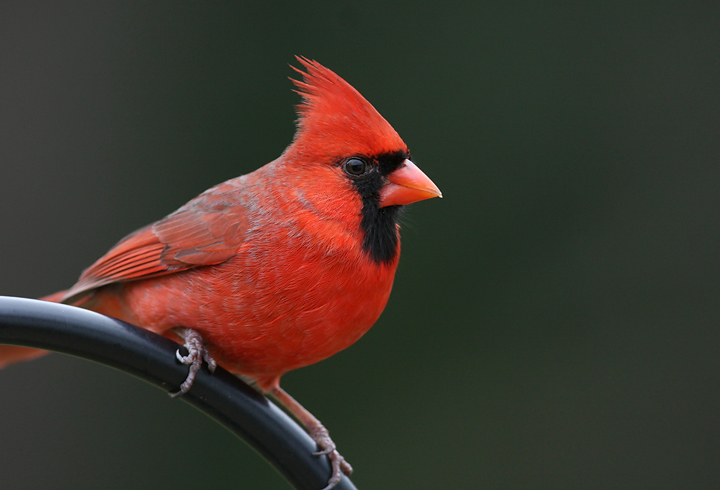
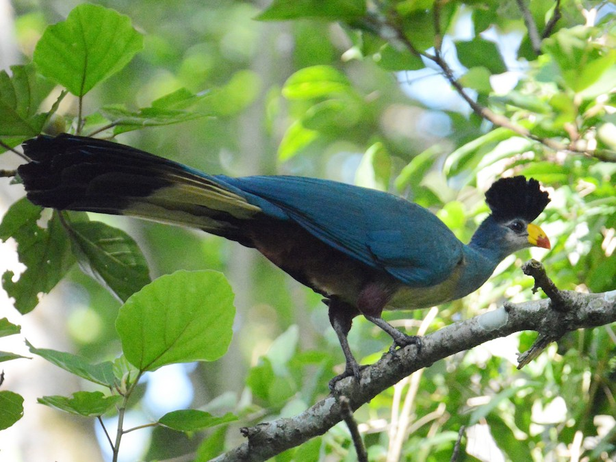
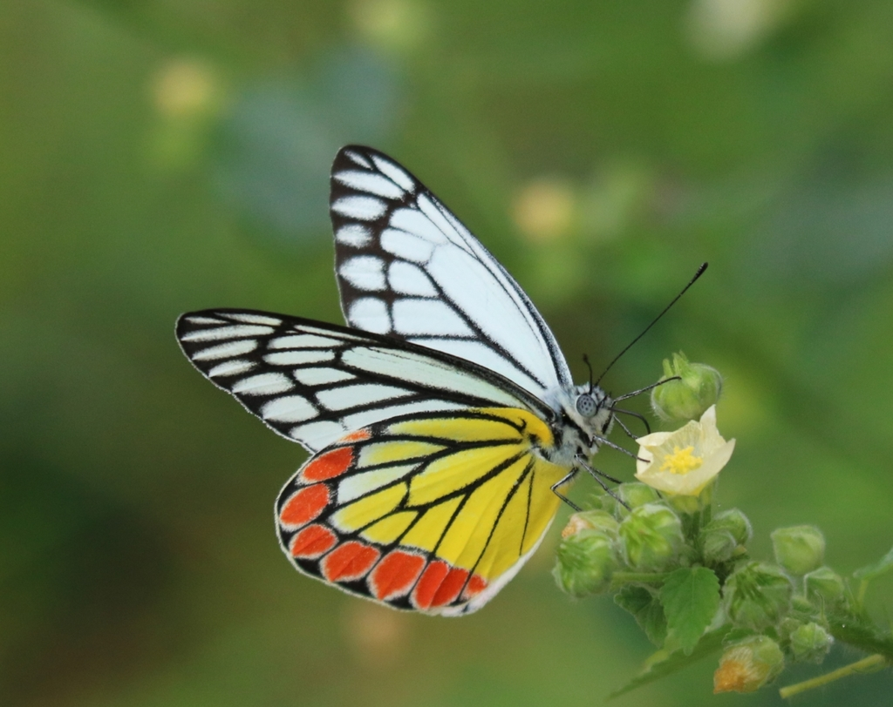
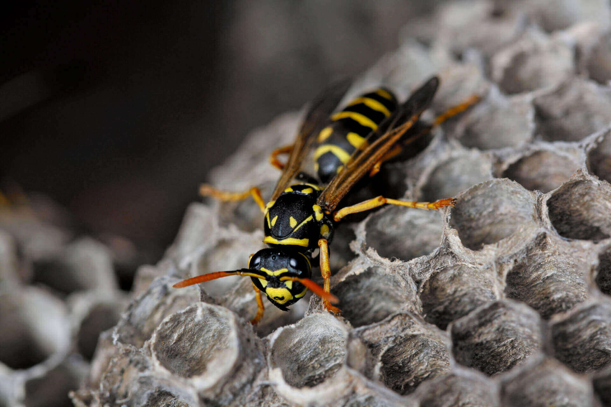
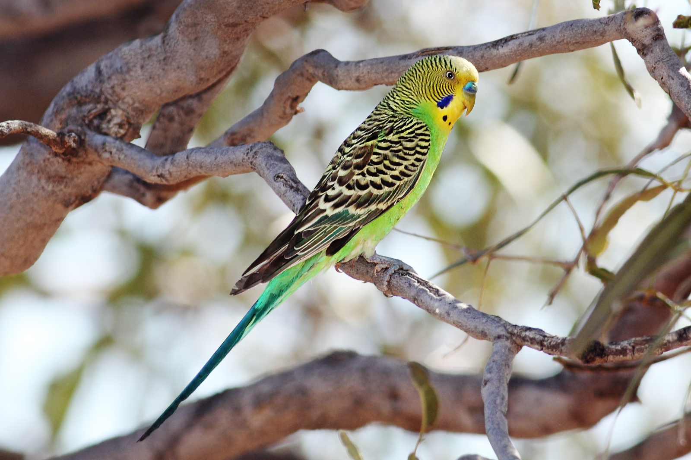
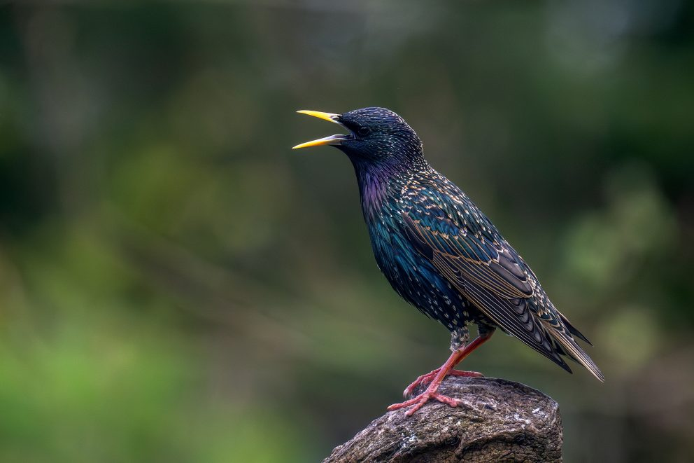
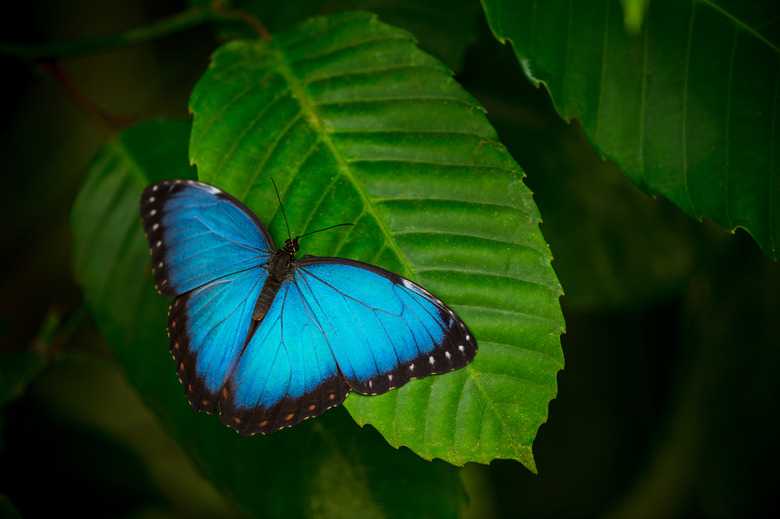
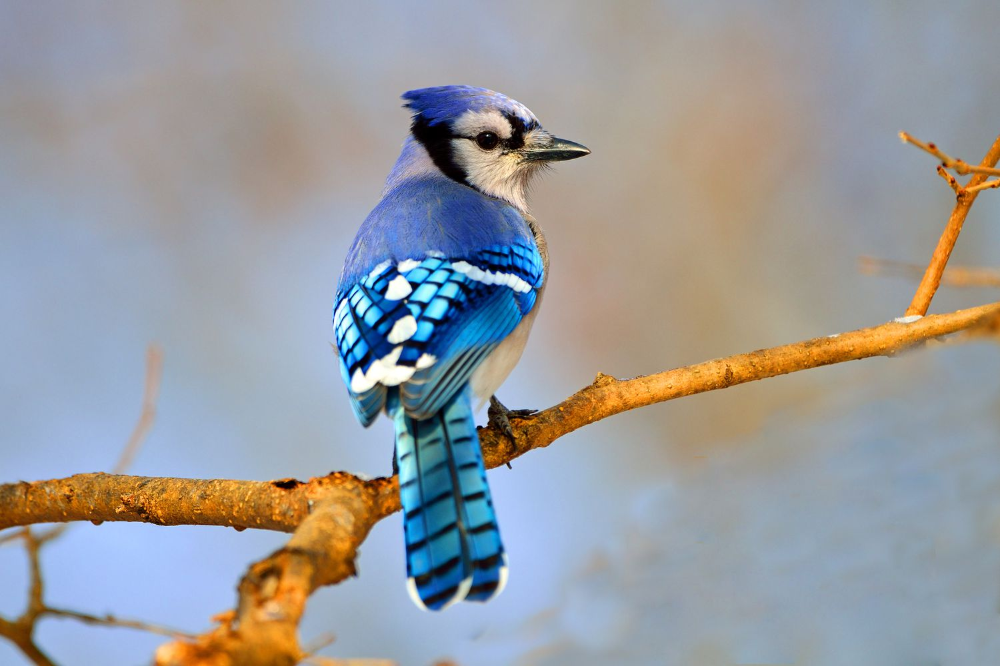
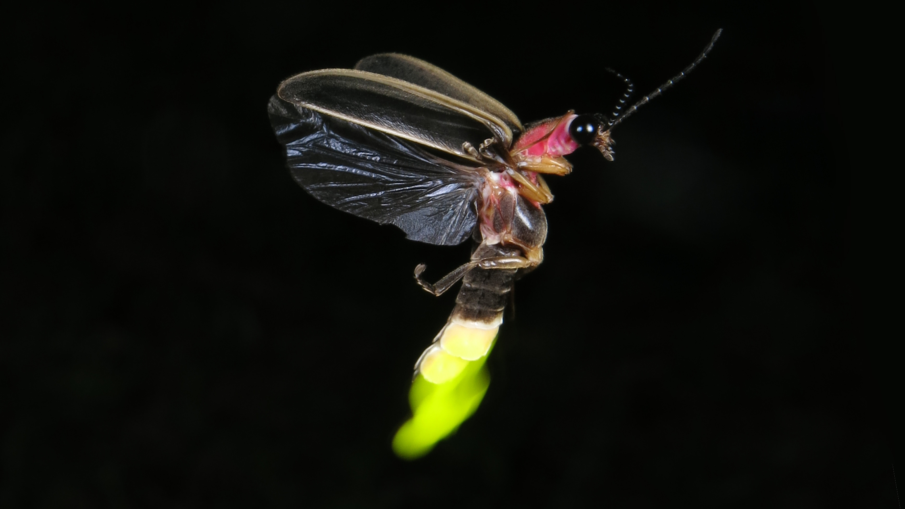

VISUAL PRODUCTION
The mechanisms behind animal color expression.
Three ways an animal makes color.
Every section pairs one mechanism with one real animal. They group into three families, by how each one treats light.
Structural color
Color by reflection
Carotenoids
Pigments absorb some wavelengths and reflect the rest. Carotenoids absorb blue and green light, reflecting red and orange.
The cardinal cannot make carotenoids itself. It builds its red entirely from food, so a brighter male is a better fed one.

Porphyrins
Nitrogen rich pigments wrapped around a metal ion, producing true green and red from pigment alone.
The turaco is one of the only birds with real green and red pigment, and the same molecules help it process dietary copper.

Pterins
Pigments built from vitamin B2 that produce white, yellow, and orange.
The Jezebel butterfly packs its pterin granules in a loosely ordered way, sharpening its yellows and reds toward structural color.

Melanin
The one pigment animals build themselves, responsible for nearly all black, grey, and brown.
The paper wasp's black facial markings are not limited by diet, but their pattern still signals its rank in the colony.

Fluorescent pigments
Pigments that absorb one wavelength of light and send it back out as a longer one, a glow seen under UV.
The budgie's crown fluoresces under UV, and mates prefer that glow. Cover it up and the attraction fades.

Thin layer interference
Color from light bouncing off a single transparent film, where the two reflections interfere.
The starling's plumage shimmers and shifts with viewing angle, never settling on one saturated color.

Multilayer reflectors
Many stacked nanolayers tuned to one wavelength, producing bright, saturated structural color.
The morpho's blue is intense enough to carry across a forest, and building those layers so precisely takes a healthy individual.

Multidimensional arrays
3D nanostructures that scatter a narrow band of light, making color that looks the same from every angle.
The blue jay's blue comes from structure, not pigment. Crush the feather and the color disappears.

Bioluminescence
Light made from scratch through a reaction between luciferin and luciferase, needing no sunlight.
The firefly generates its own glow and flashes it in a rhythm unique to its species to find a mate in the dark.
Animals make color three fundamentally different ways.
Pigments absorb light, nanostructures reflect it, and bioluminescence generates it. Many animals utilize a combination of these three visual production methods. For example, a budgie's green is structural blue layered over carotenoid yellow, and super black plumage uses microstructure to deepen melanin.
Artist statement
This project draws from the visual production topic in lecture. I designed a website that highlights three different mechanisms by which animals create visual signals: pigments, structural coloration, and bioluminescence. All three are related to the physical expression of color. The section of the website dedicated to pigments includes descriptions of carotenoid, porphyrin, pterin, and melanin pigments. The structural coloration section includes thin-layer interference, multilayer reflectors, and multidimensional arrays. The last section focuses on bioluminescence.
Each mechanism is paired with a real animal photograph that I sourced and selected to illustrate it, such as the Northern Cardinal for carotenoids, the Blue Morpho butterfly for multilayer reflectors, and the firefly for bioluminescence. The visual design of the site is intentionally dark and cinematic, so that the animals themselves become the focal point and their colors stand out against the background.
In lecture, we learned that most animal pigments cannot be self-synthesized and must be acquired through diet or serve a primary role in health. We also learned that structural colors arise from nanoscale physical architecture as opposed to chemistry, and that bioluminescence generates light entirely through a biochemical reaction requiring no sunlight. The closing section of the website ties the three strategies together and notes that many animals combine multiple mechanisms at once to produce more complex color signals.
- Northern CardinalKaytee
- Great Blue TuracoeBird
- Common JezebeliNaturalist
- Paper WaspWaltham Pest Services
- BudgerigarWikipedia
- European StarlingNevada Department of Wildlife
- Blue MorphoiStock
- Blue JayAudubon
- FireflyXerces Society